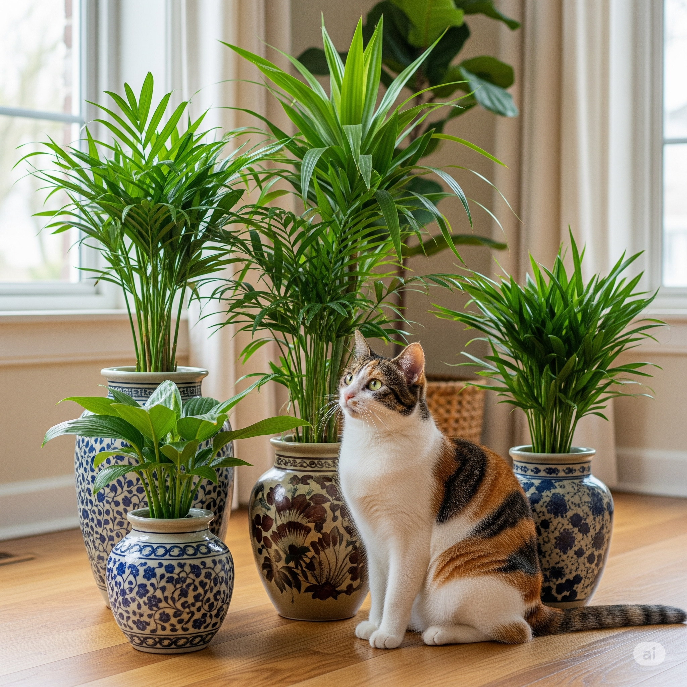

Guia completo de vasos: escolha com segurança

Escolher o vaso certo para suas plantas vai muito além da estética. Envolve conhecimento técnico, sensibilidade com as necessidades da planta e atenção à segurança dos gatos que convivem no mesmo espaço. Neste guia, você encontrará uma análise completa sobre materiais, drenagem e dimensões — com foco na harmonia entre o verde e os felinos.
1. Materiais: estabilidade, toxicidade e funcionalidade
Cerâmica (Barro)
Porosa, promove a saúde das raízes e evita o acúmulo de umidade. É pesada e estável, dificultando o tombamento por gatos. No entanto, pode se quebrar com facilidade, formando cacos perigosos.
Plástico
Leve e acessível, retém umidade por mais tempo. Deve ser usado com cautela, pois pode tombar com facilidade. Prefira modelos robustos e pesados, ou utilize como vaso interno em cachepots mais estáveis.
Cimento
Muito estável e durável, ideal para ambientes com gatos ativos. Seu peso reduz o risco de acidentes e sua aparência neutra combina com vários estilos de decoração.
Xaxim e fibra de coco
Naturais e respiráveis, são boas opções para plantas tropicais. Exigem atenção quanto à leveza e durabilidade, e podem atrair o interesse dos gatos para mordidas e arranhões.
Vidro
Esteticamente moderno, mas frágil e sem drenagem. Exige manejo extremamente cuidadoso e não é indicado para casas com gatos exploradores.
2. Drenagem: o alicerce da saúde vegetal
Vasos com furos de drenagem são o padrão ouro. Eles permitem que o excesso de água escoe, evitando o encharcamento, a morte das raízes e o surgimento de fungos. A camada inferior com argila expandida, pedras ou cacos de cerâmica aumenta a eficiência do sistema.
Em lares com gatos, a drenagem também tem impacto indireto: solo seco na superfície desencoraja escavações e ingestão de terra. Já plantas com solo encharcado tendem a atrair mais atenção felina e são mais frágeis a danos.
3. Vasos sem furos: exceções com rigor
Apesar de esteticamente desejáveis, vasos sem drenagem exigem domínio total da rega. São indicados apenas para plantas que toleram substratos mais úmidos e sempre com técnicas como rega por capilaridade ou uso de cachepot com vaso interno perfurado.
Sem esse cuidado, o risco de acúmulo de água parada aumenta, podendo gerar mofo, bactérias e ambientes atrativos — e perigosos — para o gato.
4. Dimensões: largura, altura e estabilidade
Largura: vasos largos são ideais para plantas com raízes horizontais e distribuem melhor o peso, aumentando a estabilidade contra tombamentos felinos.
Altura: necessária para raízes profundas. Também ajuda a manter plantas tóxicas fora do alcance do gato. Contudo, altura excessiva em plantas rasas pode gerar acúmulo de umidade e instabilidade.
Vasos baixos: úteis para suculentas e espécies compactas, mas mais acessíveis para gatos cavarem. Exigem mais proteção no substrato.
5. Dicas extras para um lar pet-friendly
- Evite plantas tóxicas ou mantenha-as fora do alcance.
- Use coberturas como pedras, musgo ou telas para proteger o solo.
- Ofereça alternativas como catnip e graminha para redirecionar a curiosidade dos gatos.
- Escolha vasos pesados ou use contrapesos para evitar quedas e acidentes.
Com escolhas bem pensadas, é possível ter um ambiente verde, seguro e inspirador. Um lar que floresce com harmonia entre natureza e gatos.
← Voltar para o blog